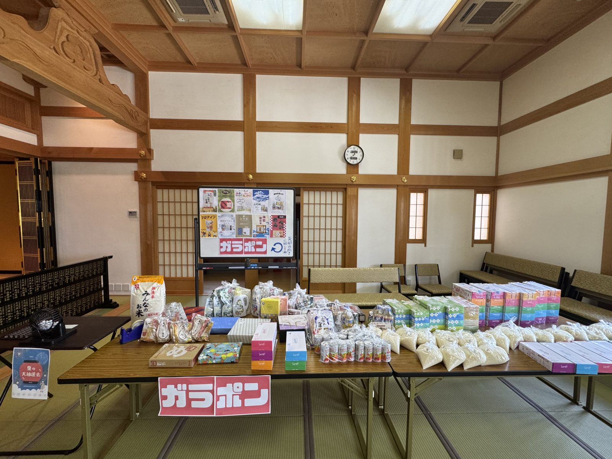

フードバンク活動の様子。寄付いただいた食品・日用品をご用意しています。
光照寺では、食品ロス削減と地域福祉の観点から、フードバンク活動に取り組んでいます。 生活に密着した食品の値上げは著しく、私たちの生活も日に日に厳しくなっております。このフードバンクの活動によって、「自分にも応援してくれる人がいる」と気づいてもらえることで、がんばる力が少しでも湧いてくれたらいいな、という願いを持って行っております。
食べきれない食品や、使い切れない日用品のような廃棄されてしまう食品を集め、必要としている方々へお届けする活動を通して、「もったいない」を「ありがとう」に変える取り組みとして地域の皆様と共に歩んでまいります。
※生鮮食品はフードバンク開催日（毎月第3日曜日）の前日以降にお持ちいただけますと幸いです。
毎月の活動状況をお知らせします
実施日：2026年1月15日（水）
新年最初のフードバンク活動を実施いたしました。門徒の皆様や地域の方々から多くの食品をお寄せいただき、誠にありがとうございました。
今回は、お米30kg、缶詰類45個、レトルト食品35個、調味料各種などをお預かりし、地域の福祉施設や支援を必要とされる10世帯にお届けしました。
実施日：2025年12月18日（水）
年末の活動として、特別にお正月用の食品も含めた配布を行いました。お餅やおせち用の食材など、年末ならではの品物もお届けすることができました。
ご協力いただいた皆様、本当にありがとうございました。
※活動報告は毎月更新いたします